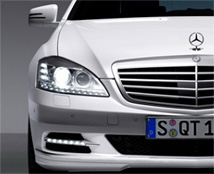

Новости
-
23.01.2012
2 июля в Краснодаре состоялся семинар «Новые PRавила сети», организатор PR-агентство «Авангард»
«Эпоха Web 2.0 изменила PR. Специалисту по связям с общественностью уже не нужны посредники (СМИ), чтобы общаться с обществом и доносить до него необходимую информацию. В сети PR равняется маркетинг. Фактически сегодня PR стал определяющим фактором успеха в сложной системе интегрированных маркетинговых коммуникаций», - рассказал участникам автор семинара, преподаватель университета Джорджа Мейсона и Государственного университета штата Канзас, США, Сергей Самойленко. -
23.01.2012
PR-агентство Авангард организовало мероприятие по открытию Mercedes-Benz
«Эпоха Web 2.0 изменила PR. Специалисту по связям с общественностью уже не нужны посредники (СМИ), чтобы общаться с обществом и доносить до него необходимую информацию. В сети PR равняется маркетинг. Фактически сегодня PR стал определяющим фактором успеха в сложной системе интегрированных маркетинговых коммуникаций», - рассказал участникам автор семинара, преподаватель университета Джорджа Мейсона и Государственного университета штата Канзас, США, Сергей Самойленко. -
23.01.2012
2 июля в Краснодаре состоялся семинар «Новые PRавила сети», организатор PR-агентство «Авангард»
«Эпоха Web 2.0 изменила PR. Специалисту по связям с общественностью уже не нужны посредники (СМИ), чтобы общаться с обществом и доносить до него необходимую информацию. В сети PR равняется маркетинг. Фактически сегодня PR стал определяющим фактором успеха в сложной системе интегрированных маркетинговых коммуникаций», - рассказал участникам автор семинара, преподаватель университета Джорджа Мейсона и Государственного университета штата Канзас, США, Сергей Самойленко. -
01.02.2012
Новые PRавила сети
«Эпоха Web 2.0 изменила PR. Специалисту по связям с общественностью уже не нужны посредники (СМИ), чтобы общаться с обществом и доносить до него необходимую информацию. В сети PR равняется маркетинг. Фактически сегодня PR стал определяющим фактором успеха в сложной системе интегрированных маркетинговых коммуникаций», - рассказал участникам автор семинара, преподаватель университета Джорджа Мейсона и Государственного университета штата Канзас, США, Сергей Самойленко.